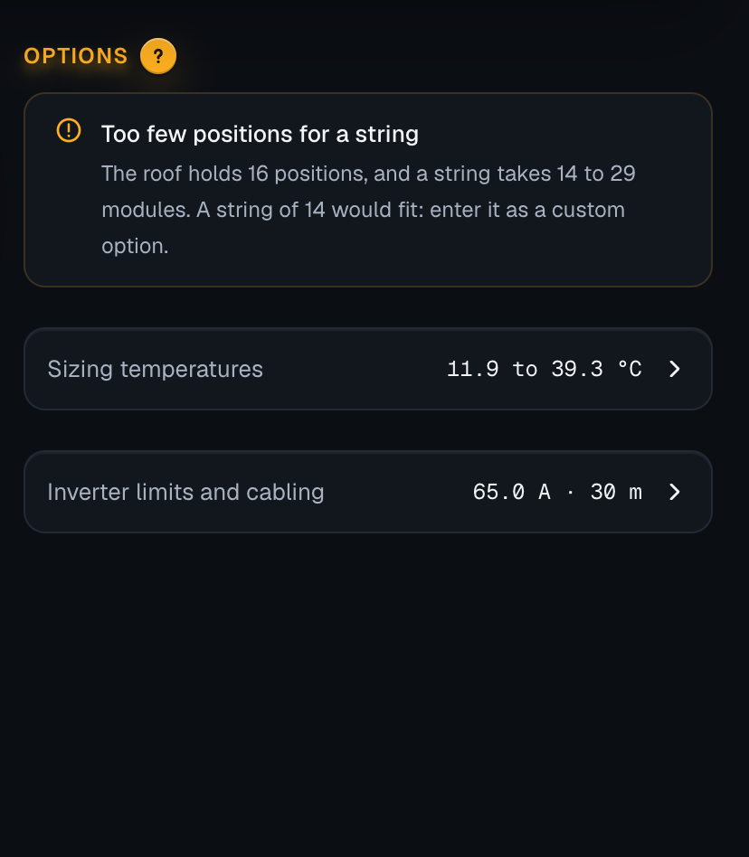
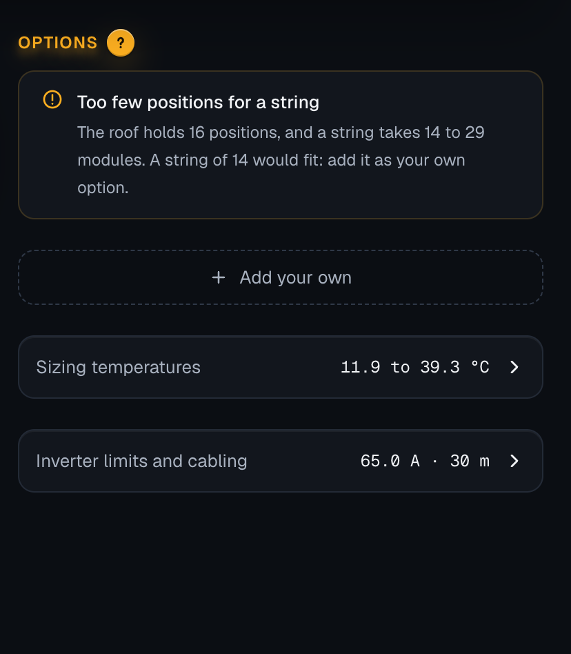
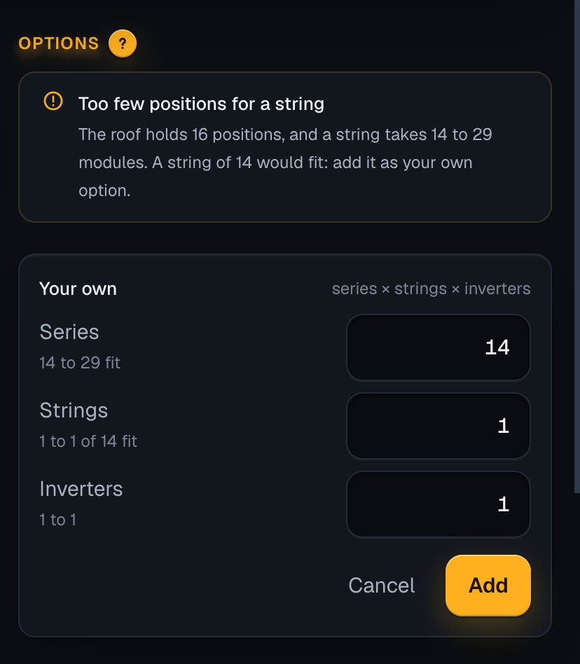
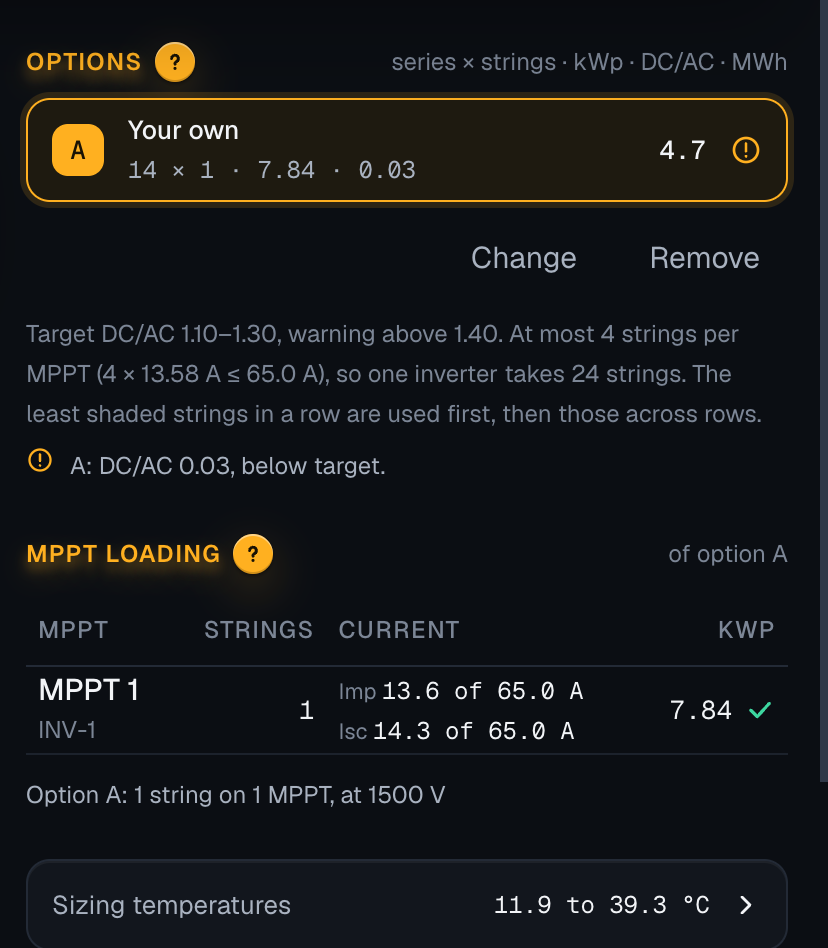

On a roof too small for the run's options that still holds a string, Options says “Too few positions for a string. The roof holds 16 positions, and a string takes 14 to 29 modules. A string of 14 would fit: enter it as a custom option.”, and shows no way to enter one. Now Add your own stands under the words, as it does under the options, and opens with Series set to the string that fits. Add saves it and chooses it, and the design runs again. The words end “add it as your own option”, after the button's name.
When: the run has no options because the roof holds too few positions, and a string of a length that fits does fit on it. Not when no length fits, nor when the roof holds no module: there is nothing to add then, and the section says so as today. Tablet: the Options column, under the stage and the figures.



